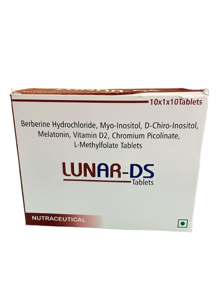
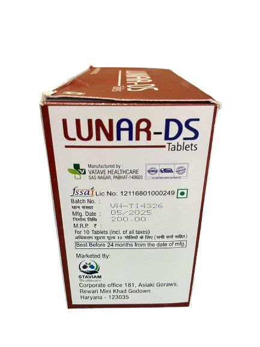
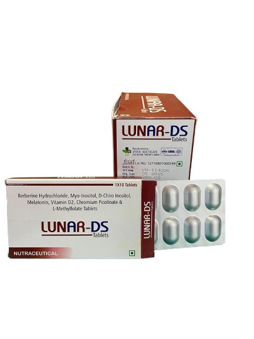

Lunar-DS tablet is a nutritional supplement rich in essential vitamins.It is essentially useful to treat chromium deficiency and aids in controlling blood sugar in people with diabetes. These tablets are very usefull in lowering cholesterol and are used as a weight-loss supplement.
1. A dietary nutritional supplement not for medicinal use.
2. Read the label carefully before use.
3. Do not exceed the recommended dose.
4. Keep out of the reach of children.
5. Store at a temperature below 25 degree celsius and with 40% humidity in a cool and dry place.
6. Should be protected from direct light.
1. Insomnia or poor sleep quality – trouble falling asleep or staying asleep.
2. Weakened immune system – melatonin also supports immune regulation.
3. Hormonal imbalance – may affect reproductive hormones and menstrual cycles.
4. Bone pain and muscle weakness.
5. Rickets (in children) or osteomalacia/osteoporosis (in adults) – bones become soft or brittle.
6. Delayed wound healing and inflammation-related issues.
7. Fatty liver tendency – impaired fat metabolism in liver cells.
8. Poor insulin sensitivity – higher blood sugar and increased risk of type 2 diabetes or PCOS symptoms.
9. Higher blood sugar levels – loss of its insulin-sensitizing effects.
10. Increased cholesterol and triglycerides.
11. Slower metabolism – potential weight gain or difficulty in fat loss.
12. Gut imbalance (dysbiosis) – since berberine has mild antibacterial and gut-regulating effects.
Each film coated tablet contains(approx):
1. Berberine Hydrochloride - 500mg
2. Myo-Inositol - 1100mg
3. D-chiro-Inositol - 27.6mg
4. Melatonin - 1.5mg
5. Vitamin D2 - 400 I.U
6. Chromium Picolinate - 400mcg
7. L-Methylfolate - 0.05mg
8. Excipeints - Q.5